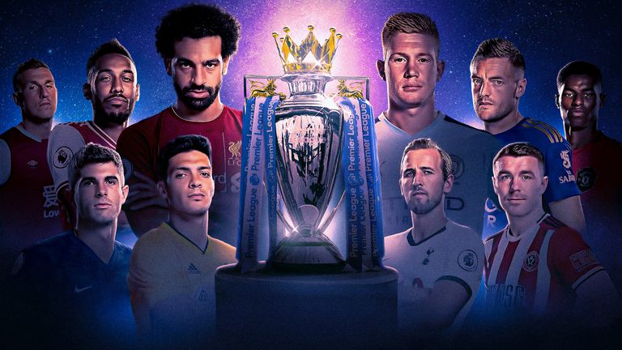

The Premier League, often referred to outside England as the English Premier League or the EPL, is the top level of the English football league system. Contested by 20 clubs, it operates on a system of promotion and relegation with the English Football League (EFL). Seasons run from August to May with each team playing 38 matches (playing all 19 other teams both home and away). Most games are played on Saturday and Sunday afternoons.

The competition was founded as the FA Premier League on 20 February 1992 following the decision of clubs in the Football League First Division to break away from the Football League, founded in 1888, and take advantage of a lucrative television rights deal. The deal was worth around £1 billion a year domestically as of 2013–14, with Sky and BT Group securing the domestic rights to broadcast 116 and 38 games respectively. The league is a corporation in which the member clubs act as shareholders, and generates €2.2 billion per year in domestic and international television rights. Clubs were apportioned central payment revenues of £2.4 billion in 2016–17, with a further £343 million in solidarity payments to English Football League (EFL) clubs.
The Premier League is the most-watched sports league in the world, broadcast in 212 territories to 643 million homes and a potential TV audience of 4.7 billion people. For the 2018–19 season average Premier League match attendance was at 38,181, second to the Bundesliga's 43,500, while aggregated attendance across all matches is the highest of any league at 14,508,981. Most stadium occupancies are near capacity. The Premier League ranks second in the UEFA coefficients of leagues based on performances in European competitions over the past five seasons as of 2019, only behind Spain's La Liga.
There are 20 clubs in the Premier League. During the course of a season (from August to May) each club plays the others twice (a double round-robin system), once at their home stadium and once at that of their opponents', for 38 games. Teams receive three points for a win and one point for a draw. No points are awarded for a loss. Teams are ranked by total points, then goal difference, and then goals scored. If still equal, teams are deemed to occupy the same position. If there is a tie for the championship, for relegation, or for qualification to other competitions, a play-off match at a neutral venue decides rank.
A system of promotion and relegation exists between the Premier League and the EFL Championship. The three lowest placed teams in the Premier League are relegated to the Championship, and the top two teams from the Championship promoted to the Premier League, with an additional team promoted after a series of play-offs involving the third, fourth, fifth and sixth placed clubs. The number of clubs was reduced from 22 to 20 in 1995, when four teams were relegated from the league and only two teams promoted. The top flight had only been expanded to 22 teams at the start of the 1991–92 season – the year prior to the formation of the Premier League. On 8 June 2006, FIFA requested that all major European leagues, including Italy's Serie A and Spain's La Liga, be reduced to 18 teams by the start of the 2007–08 season. The Premier League responded by announcing their intention to resist such a reduction. Ultimately, the 2007–08 season kicked off again with 20 teams.